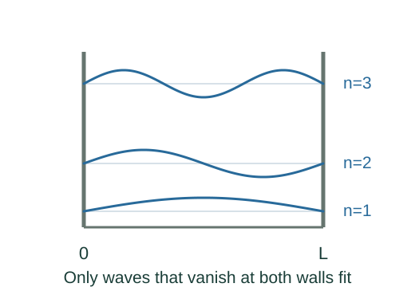

Derive the energy levels of a particle in a box
Confinement imposes boundary conditions on a matter wave. Only discrete wave patterns fit a box with infinitely high walls, and each pattern has a definite allowed energy.
What the symbols mean
L: one-dimensional box width; m: particle mass; n = 1, 2, …: mode number; = h/(2π).
When this applies
Nonrelativistic particle, infinite potential outside 0 < x < L, zero potential inside, and stationary quantum states.
Developing the argument

Write the Schrödinger equation inside
With U = 0, the stationary equation is a second-order oscillatory equation. Its general solution is a sine plus a cosine.
Apply the left boundary
The infinite-wall model requires ψ(0) = 0, so the cosine coefficient B vanishes.
Apply the right boundary
A nonzero state must also have ψ(L) = 0. This permits only kL = nπ. The value n = 0 gives the identically zero function, which cannot be normalized.
Convert wavenumber into energy
Substitution into the differential equation gives E = ℏ²k²/(2m). Normalization fixes A = √(2/L).
A closer lookHow do boundary conditions select wavelengths? ↗A worked example
An electron in a 1 nm infinite box has ground-state energy about 0.376 eV. Halving the box width raises all levels by a factor of four.
Derivation behind this calculation ↗A point to keep straight
The nonzero lowest energy is not thermal motion. It follows from confinement and the allowed wave states.
Check the assumptions and derivation ↗